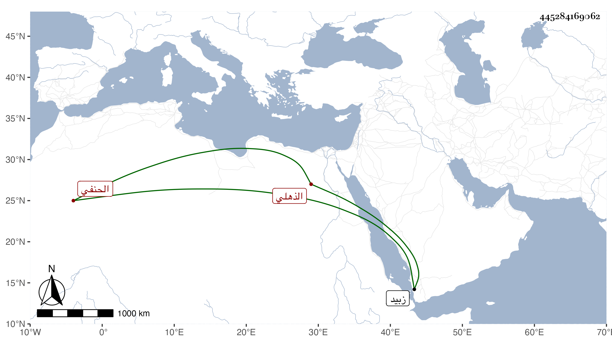

0902Sakhawi.DawLamic.ITO20230111-ara1.EIS1600.445284169062
Biography ID: 445284169062
580
محمود بن محمد بن صفي بن محمد التاج أبو عبد الله الوراقي الذهلي الحنفي المدعو خواجه بره . كان فقيها عارفا محققا مدققا في مذهبه ذا يد طولى في الفروع والأصول والمعاني والبيان والمنطق والنحو وغيرها كل ذلك مع الصلاح والتخلي للعبادة والتدريس قدم زبيد قاصدا الحج في سنة ثمان وتسعين وسبعمائة فقرأ عليه جماعة من فقهاء الحنفية بها واجتمع بمشايخ الصوفية وكان كثير البحث معهم وألف في النحو كتابا سماه المقتصد وأهداه للسلطان فأثابه عليه خمسمائة دينار وكذا ألف في رجوعه بها أيضا في السنة التي تليها تحفة السلاطين في الغزو والجهاد وأهداه إلى السلطان أيضا فأثابه عليه كذلك ذكره الخزرجي وكتبته هنا بالظن القوي .
